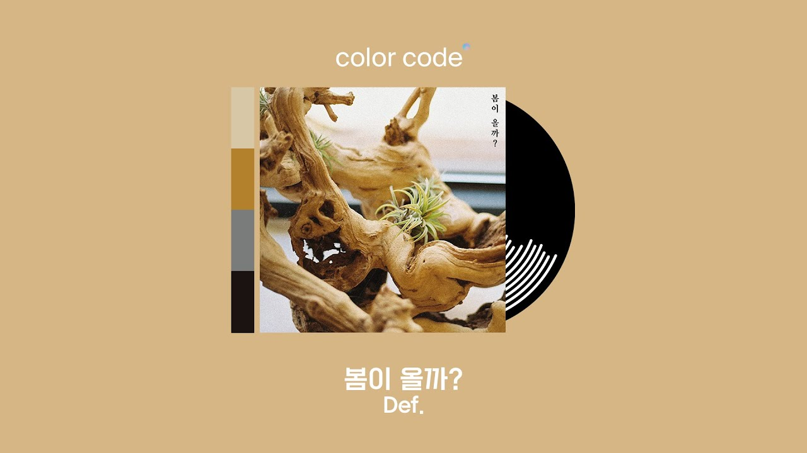

Discografia
Álbum
Archive 1: [Road Runner]
Fecha de lanzamiento:27-Noviembre-2024
Lista de canciones:
- Baby
- if you
- Make Me Right
- Chosen
- Take it easy
- Crash
- Preview
- °C (온도)
- Right back
- Inside
- Cloud nine
- Present (CD ONLY)
- Winter night (CD ONLY)
Mini Álbum
SOMO: FUME
Fecha de lanzamiento:26-Agosto-2021
Lista de canciones:
- B.T.W (Feat. Jay Park) (Prod. por Cha Cha Malone)
- AM PM (Feat. Whee In) (Prod. por Gray)
- FAME (Feat. JUNNY) (Prod. por GroovyRoom)
- In To You (Feat. G1nger) (Prod. por Woogie)
- Switch It Up (Feat. Sokodomo) (Prod. por Cha Cha Malone)
- Count On Me (Prod. por GroovyRoom)
- Paranoia (CD only) (Prod. por GroovyRoom)
Be Yourself
Fecha de lanzamiento:21-Septiembre-2022
Lista de canciones:
- go UP
- Break It Down (Feat. Sik-K)
- Livin'
- The Way We Are
- Fountain of Youth
- Holyday

Seasonal Hiatus
Fecha de lanzamiento:14-Febrero-2023
Lista de canciones:
- 잠시만
- Whiskey
- Wonder
Singles
Switch It Up
Fecha de lanzamiento:14-Mayo-2021
Lista de canciones:
- Switch It Up (Feat. Sokodomo) (Prod. por Cha Cha Malone)
JUNNY & JAY B nostalgia
Fecha de lanzamiento:27-Diciembre-2021
Lista de canciones:
- nostalgia (por JUNNY & JAY B)
- solo (por JUNNY & lullaboy)
Rocking Chair
Fecha de lanzamiento:23-Agosto-2022
Lista de canciones:
- 흔들의자 (Rocking Chair)
- 흔들의자 (Rocking Chair) (Inst.)
Mini Álbum Def.(seudónimo)
LOVE.
Fecha de lanzamiento:26-Enero-2022
Lista de canciones:
- AGAIN (Feat. LEON)
- 왜그래?
- I JUST WANNA KNOW
- 바보같이 (Feat. JUNNY)
- WANT U
- SUNSET WITH YOU
abanadoned love.
Fecha de lanzamiento:17-Octubre-2022
Lista de canciones:
- my bad
- calm down
- my abandoned love
- not easy
- 맞아 (right)
- you say
Single Digital
Fudasca & Def. Is It A Dream?
Fecha de lanzamiento:18-Octubre-2021
Lista de canciones:
- Is It A Dream?

봄이 올까?
Fecha de lanzamiento:26-Diciembre-2022
Lista de canciones:
- 봄이 올까?
Composiciones

Composiciones
Fecha de lanzamiento:24-Octubre-2019
Lista de canciones:
- GOT7- LAST PIECE (2020)
- GOT7- Ride (2020)
- GOT7- CRAZY (2020)
- GOT7 - THURSDAY (2019)
- GOT7 - PRAY (2019)
- GOT7 - 니가 부르는 나의 이름 (You Calling My Name) (2019)
- GOT7 - Reborn (2019)
- GOT7 - PAGE (2019)
- GOT7 - ECLIPSE (2019)
- GOT7 - Your Space (2019)
- Jus2 - DRUNK ON YOU (Japan version) (2019)
- Jus2 - DRUNK ON YOU (Japan version) (2019)
- Jus2 - TOUCH (2019)
- Jus2 - Senses (2019)
- GOT7 - 지켜줄게 (I'll Protect You) (2018)
- GOT7 - Enough (2018)
- GOT7 - 너 하나만 (One and Only You) (2018)
- GOT7 - HMMMM (2018)
- GOT7 - Look(2018)
- GOT7 - SHINING ON YOU (2018)
- GOT7 - Teenager (2017)
- GOT7 - Q (2017)
- GOT7 - Go Higher (2017)
- GOT7 - Shopping Mall (2017)
- GOT7 - You Are (2017)
- JJ Project - Icarus (2017)
- JJ Project - On & On (2017)
- JJ Project - Icarus (2017)
- JJ Project - Find You (2017)
- JJ Project - Fade Away (2017)
- GOT7 - 離さなければ... (If Released...) (2016)
- GOT7 - 니꿈꿔 (Dreamin') (2016)
- GOT7 - Prove It (2016)
- GOT7 - skyway (2016)
- GOT7 - Something Good (2016)
- GOT7 - Fish (2016)
- GOT7 - Home Run (2016)
- GOT7 - 매일 (Everyday) (2015)
- GOT7 - Mine (2015)
- GOT7 - 나쁜 짓 (Bad Behavior) (2014)